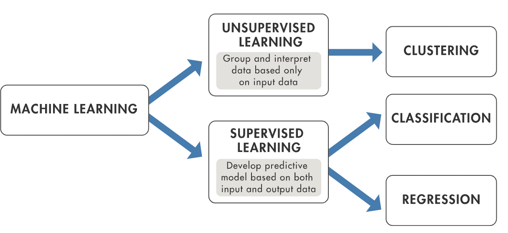
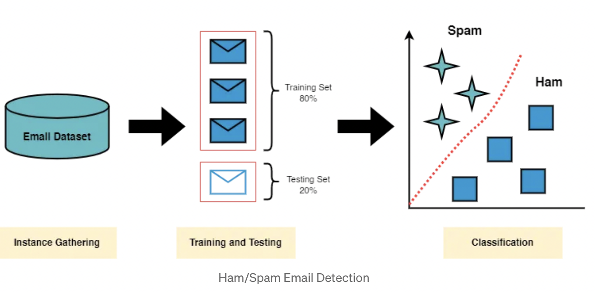

Machine learning allows computers to learn patterns from data and make decisions without being explicitly programmed. Whether it’s recommending movies, filtering spam emails, or detecting fraud, machine learning is everywhere! 🎯
This tutorial is designed for beginners and non-technical readers who want to understand the basics of machine learning and how to build a simple model using Python. Let’s dive in! 🏊♂️
Machine learning relies on a robust ecosystem of specialized libraries that simplify tasks like data processing, visualization, and model building. Before diving into implementation, it's essential to install the following libraries:
Each of these libraries plays a critical role in streamlining the machine learning workflow. Without them, manually implementing various processes like data wrangling, model training, and visualization would be highly inefficient.
To install these libraries, simply run the following command in your terminal or command prompt:
pip install scikit-learn matplotlib pandasFor a deeper dive into Python libraries used in machine learning, refer to the Scikit-Learn Documentation.
After installing the necessary packages, we need to import them into our script. Importing allows us to leverage the capabilities of these libraries for different machine learning tasks:
pandas - Helps in handling datasets, reading from CSV files, and structuring data into tables.sklearn.model_selection - Provides utilities for splitting data into training and testing sets.sklearn.ensemble - Includes ensemble models like Random Forest, which can improve accuracy through multiple decision trees.sklearn.metrics - Contains functions to evaluate model performance.matplotlib - Useful for visualizing data trends, accuracy graphs, and feature importance.
import pandas as pd
from sklearn.model_selection import train_test_split
from sklearn.ensemble import RandomForestClassifier
from sklearn.metrics import accuracy_score
import matplotlib.pyplot as plt
By importing these libraries, we set up our environment for efficient data handling, model training, and evaluation.
Data is the foundation of any machine learning model. Poorly prepared data can lead to inaccurate predictions. Therefore, before training a model, we must:
A well-structured dataset improves model learning efficiency and accuracy.

# Load dataset
data = pd.read_csv('your_data.csv')
X = data.drop('target', axis=1)
y = data['target']
# Split dataset into training and testing sets
X_train, X_test, y_train, y_test = train_test_split(X, y, test_size=0.2, random_state=123)
Dataset splitting ensures that the model is trained on one portion and tested on unseen data, reducing the risk of overfitting.
Now that we have prepared our dataset, it's time to train a machine learning model. We'll use a Random Forest Classifier, a powerful algorithm that excels at classification tasks.
Random Forest is widely used in industry for tasks like fraud detection, medical diagnosis, and spam filtering.
# Train the Random Forest model
model = RandomForestClassifier(n_estimators=100, random_state=123)
model.fit(X_train, y_train)
Here, we specify n_estimators=100, meaning our model will use 100 decision trees. Increasing the number of trees generally improves accuracy but can slow down training.
After training our model, we must evaluate its performance to ensure it generalizes well to unseen data. Model evaluation helps us understand how well the model is performing and whether it is making accurate predictions.
Accuracy = (Correct Predictions / Total Predictions) × 100%Accuracy is the simplest metric, but it may not always be the best choice. For datasets with an uneven distribution of classes (imbalanced data), accuracy can be misleading. Instead, we also consider metrics like:
# Make predictions
y_pred = model.predict(X_test)
# Calculate accuracy
accuracy = accuracy_score(y_test, y_pred)
print(f'Model Accuracy: {accuracy:.2f}')
By using multiple evaluation metrics, we gain a more comprehensive view of our model's performance.
Hyperparameter tuning helps us optimize our model's performance by finding the best combination of settings. Instead of manually adjusting parameters, we use GridSearchCV to systematically search for the optimal values.
from sklearn.model_selection import GridSearchCV
param_grid = {
'n_estimators': [50, 100, 200], # Number of trees in the forest
'max_depth': [None, 10, 20], # Maximum depth of trees
'min_samples_split': [2, 5, 10] # Minimum number of samples required to split a node
}
grid_search = GridSearchCV(RandomForestClassifier(), param_grid, cv=5, scoring='accuracy')
grid_search.fit(X_train, y_train)
print(f'Best Parameters: {grid_search.best_params_}')
Hyperparameter tuning can significantly enhance model performance by selecting the most effective parameter values, ensuring better predictions and generalization to new data.
Congratulations! 🎉 You have successfully built, trained, and optimized a machine learning model. Throughout this tutorial, we covered: